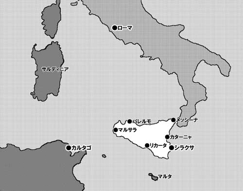

文責：dawn
★マスターの前書き
・ルールについて
このキャンペーンはＫＯＥＩの協力を得てＦ.Ｅ.Ａ.Ｒ 社から出版された「三国志演技」というシステムを使用して行われました。これは名前が示す通り、二世紀後半〜三世紀前半、後漢末期の中国を舞台とする冒険を楽しむためのシステムです。一人で一軍に匹敵するような武人同士の一騎打ちや、それこそ「演義」の名軍師達のように策略を巡らす文人の等の活躍が売り物のシステムです。
基本的には大雑把な２Ｄ６システムですが、舞台とする時代の関係から集団戦闘ルールも完備しています。まあ、これも大雑把な代物ではあるのですが。
・背景世界について
「三国志演技」は、本来なら後漢末期の中国を舞台にしているのですが、今回はそれよりさらに数百年前、紀元前三世紀の地中海世界を舞台としています。この当時、後に帝国となる共和政ローマはイタリア半島を統一し、地中海進出の意図を見せていました。また、現在のチュニジア辺りに存在したフェニキア人の都市国家カルタゴは、地中海西部の制海権をほぼ確率していました。
その他アレクサンドロス大王の後継者を自任する東方のヘレニズム三国（マケドニア、シリア、エジプト）も、地中海の覇権争いに無関心ではありませんでした。そんな時代に、キャンペーンはイタリア半島近くのシチリア島で始まります。
※シナリオの都合上、実際の歴史とは違う部分があります。このキャンペーンでは第一次ポエニ戦争と第二次ポエニ戦争の間を含めた６０年程の間に登場した人物が年代を考えずに登場します。この辺りの歴史を詳しく知っている方は、できれば笑って許してください。まあ、架空戦記のようなものだと思っていただければ。
・ハウスルールについて
このキャンペーンでは本来システムが想定していない時代を使用しているため、ルールに少々改変を加えています。
具体的には、以下の２点です。
・武人を個人戦タイプと集団戦タイプに分け、集団戦タイプの武人の死中活は集団戦闘時に使えるようにする。
・突撃と夜戦を行うための指揮判定目標値を４点下げる。
―シラクサ―
・ヒエロン二世：シラクサの僭主
・ヒエロニュモス：ヒエロンの息子
・ウラニオス：プルトニオスの副官
・アルキメデス：アナクゼオンの学友―ローマ―
・アッピウス：執政官
・ファビウス：防戦を得意とする将軍
・マルケルス：猛将タイプの将軍
・フラミニウス：海軍の長―カルタゴ―
・ハンノン：カルタゴ本国の元老
・ハミルカル：イベリアを征服した将軍
・ハンニバル：ハミルカルの息子
・ドロクワ：ハンノンの孫
・ゴーフル：ＰＣ１に片目を奪われた将軍―その他―
・リスタルキス：ＰＣ２の仇敵の神官
・ジュリアン・ソロ：ユリエナの父親
・ユリエナ：バルトロマイオスの婚約者
・アンティア：セレウコス朝シリアの姫
・フィリッポス五世：ギリシア王